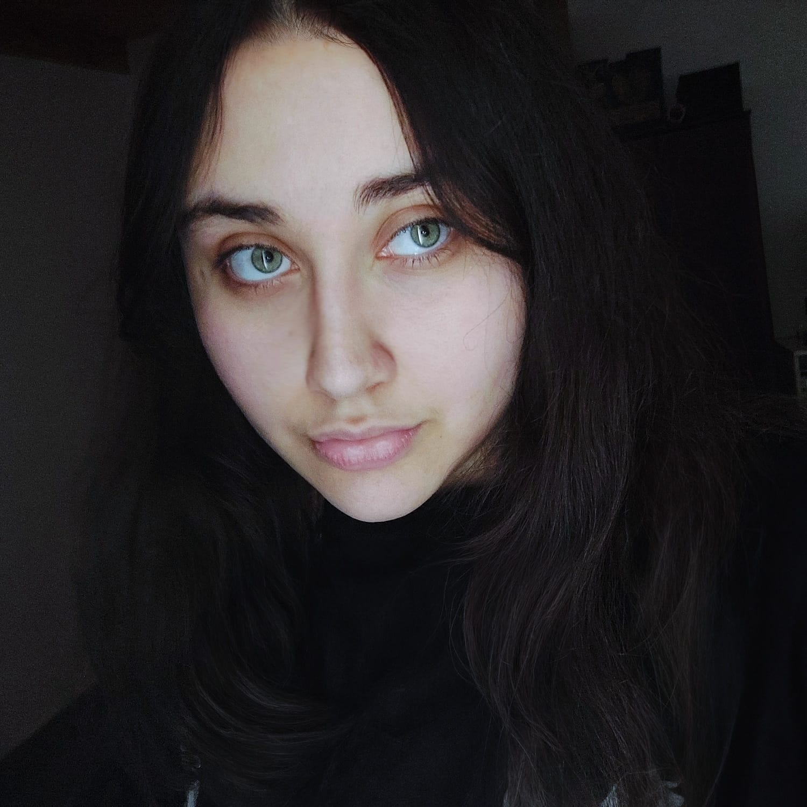

¡Hola, Soy Lucila!, tengo 21 años y
soy desarrolladora fullstack en formación con una sólida base
en diseño gráfico y construcción.
Nací en Córdoba, Argentina, y desde muy joven mostré interés por
el diseño, la creatividad y la tecnología. Estudié en el IPET
N°333 "Julio Salusso", donde me gradué como Maestra Mayor de
Obras. Posteriormente, inicié la carrera de Ingeniería en Sistemas
en la UTN, donde cursé durante un año, lo que me permitió adquirir
una base en programación. Actualmente, me desempeño como
diseñadora gráfica freelancer.
Además del mundo del desarrollo y el diseño, tengo varios hobbies
que me acompañan día a día: disfruto jugar videojuegos, ver
películas, series, anime y escuchar musica. Esto me ayuda a
desconectarme y relajarme.